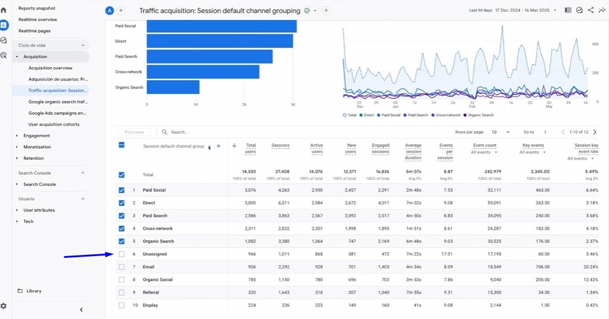
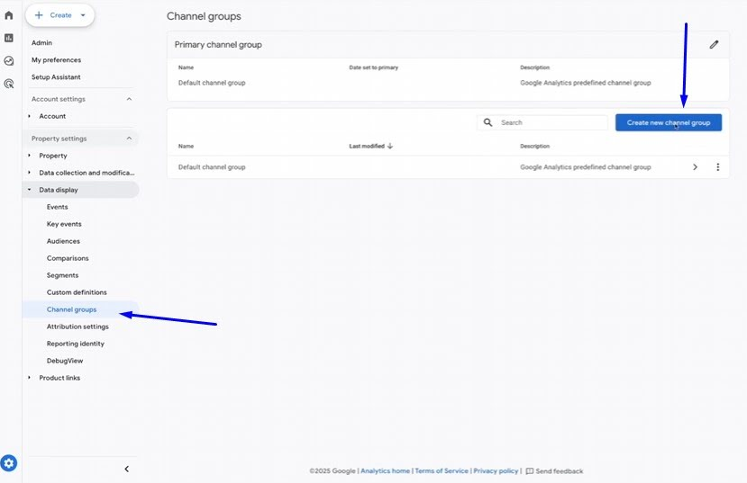
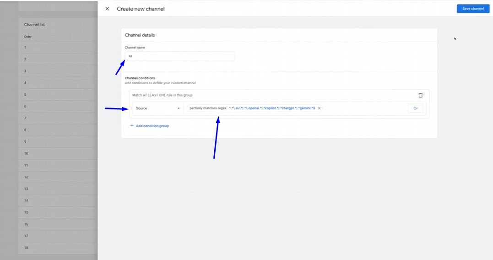
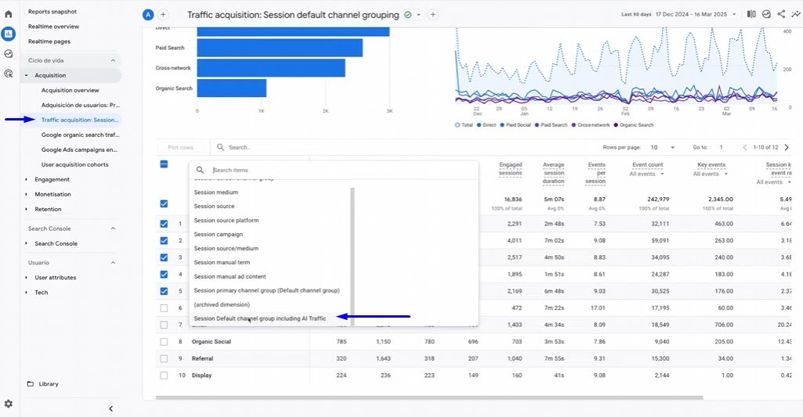
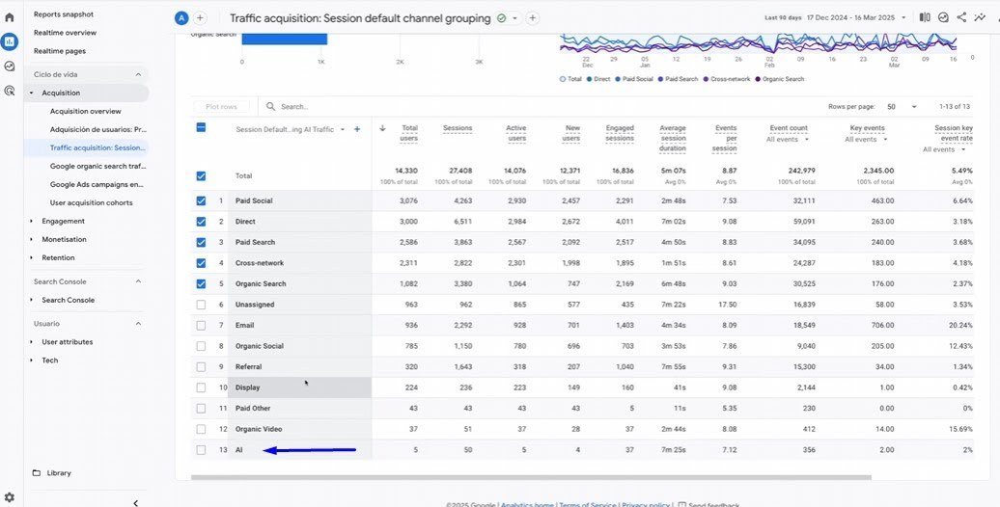
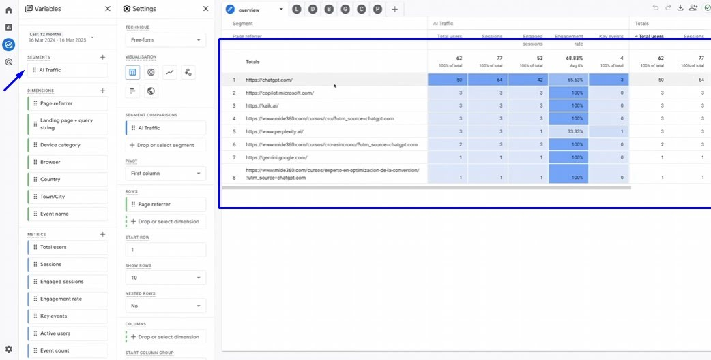

Introducción
Actualmente, muchos usuarios acceden a páginas web a través de herramientas de Inteligencia artificial generativa como Gemini o ChatGPT, las cuales se han convertido en verdaderos motores de búsqueda que traen tráfico cualificado. Sin embargo, Google Analytics 4 (GA4) no es capaz de identificar este tráfico por defecto, incluyéndolo en el canal "Unassigned".
Este tutorial te enseñará cómo configurar la herramienta para sacar esas visitas del cajón de sastre y generar diferentes informes para medir la calidad del tráfico, su propensión de compra e intentar identificar los términos de búsqueda.
Requisitos previos
- Acceso con permisos para crear nuevas agrupaciones de canales y exploraciones en GA4.
- Una expresión regular (Regex) que identifique a las herramientas de IA más habituales, la cual el autor proporciona en la descripción de su vídeo.
Paso a paso
Paso 1: Comprobar el tráfico de IA actual
Antes de configurar nada, vamos a comprobar si ya estás recibiendo este tráfico oculto.
- Ve a la sección de Informes en GA4 y abre el informe de Adquisición de tráfico.
- Cambia la dimensión principal a Fuente de la sesión (session source).
- En el buscador de la tabla, escribe términos como "Ai" o "gpt".
- Si ves fuentes como
perplexityochatgpt, significa que la herramienta no está preparada y tienes visitas perdiéndose en el canal Unassigned.

Paso 2: Crear una agrupación de canales personalizada
Para que GA4 clasifique este tráfico automáticamente, debemos crear una nueva agrupación.
- Ve a la sección de Administración.
- Entra en visualización de datos (Data display) y luego a la sección de Channel groups.

- Busca el canal por defecto y haz clic en Copiar para crear uno nuevo.
- Nombra el nuevo grupo (por ejemplo:
default Channel grou including Ai Traffic). - Haz clic para crear un nuevo canal y llámalo
Ai. - En las condiciones, apóyate en la dimensión Fuente y elige la opción partial matches regular expression.
- Pega la expresión regular con las fuentes de IA (Gemini, Copilot, Perplexity o ChatGPT). Puedes usar esta expresión regular para agrupar tráfico procedente de herramientas de IA:
Nota: Esta versión evita usar una coincidencia demasiado amplia como
.*(chatgpt\.com|openai\.com|claude\.ai|anthropic\.com|gemini\.google\.com|copilot\.microsoft\.com|microsoft365\.com|office\.com|perplexity\.ai|meta\.ai|grok\.com|x\.ai|poe\.com|you\.com|mistral\.ai).*.aiy está pensada para capturar fuentes de tráfico de asistentes generativos y buscadores de IA más habituales. Puedes ampliar esta regex en el futuro con la aparición de nuevas fuentes. - Aplica, guarda el canal y la agrupación de canales.

Paso 3: Crear una Exploración avanzada (Recomendado)
Para hacer un análisis más en profundidad de este tráfico, es más práctico usar técnicas de exploración.
- Crea una exploración y añade un Segmento de tráfico de Inteligencia artificial.
- Utiliza la dimensión de referencia de la página (indicada como Pace referer en el vídeo).
- Selecciona la condición matches reg e incluye la expresión regular.
- Al aplicar, verás automáticamente cuántos usuarios (ej. 62 usuarios) y eventos (ej. 372 eventos) cumplen con la condición.

Paso 4: Analizar los datos de la IA
Cruza el segmento creado con diferentes dimensiones métricas para generar informes avanzados:
- Adquisición general: Añade métricas de volumen como usuarios, sesiones, engagement rate e interacciones de conversión.
- Páginas de destino: Este informe es muy relevante porque nos permite inferir cuáles son los términos de búsqueda que utilizaron, analizando en qué contenido aterrizaron (por ejemplo, un curso de BigQuery).

- Conversiones: Revisa qué eventos se están consiguiendo, fijándote si ya hay usuarios dejándote sus datos (evento
generate_lead). - Rutas de exploración: Utiliza este informe para entender cómo los usuarios navegan después de acceder, viendo qué eventos hacen, si hicieron scroll y cuántos clics necesitaron para generar un lead.

Errores comunes
- No crear una copia del Channel Group: Es importante dar a "Copiar para crear uno nuevo" para partir del canal por defecto.
- Asumir que GA4 lo mide solo: GA4 no es capaz de identificarlo por defecto y mete estas visitas en el cajón de sastre del not provided o Unassigned si no actualizas la configuración.
Conclusión
El tráfico procedente de Inteligencia Artificial va a seguir aumentando en el tiempo hasta convertirse en verdaderas alternativas a motores de búsqueda consolidados como Google o Bing. Configurar GA4 hoy para identificar este tráfico te permitirá enriquecer tus contenidos para una experiencia óptima dentro de estas nuevas herramientas.
⚠️ Nota de privacidad: Asegúrate siempre de cumplir con el GDPR/RGPD a la hora de procesar o guardar parámetros de tráfico de los usuarios.
FAQ
¿Se pueden ver las palabras clave exactas que el usuario buscó en la IA?
La herramienta enmascara las búsquedas en el not provided, pero el informe de páginas de destino nos permite inferir los términos de búsqueda basándonos en el contenido donde aterriza el usuario.